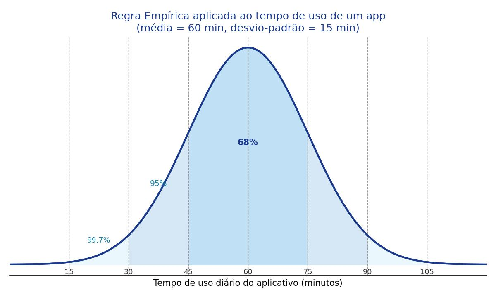
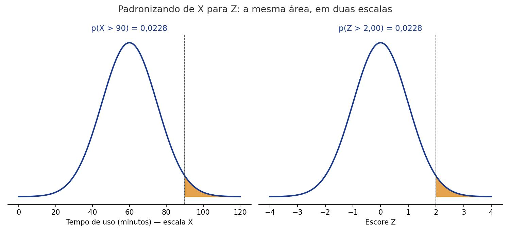

O que é a distribuição normal?
Até agora vimos como descrever e visualizar dados que já temos em mãos. Nesta aula damos um passo além: conhecemos a distribuição normal, um padrão em forma de sino que aparece o tempo todo em dados reais (altura, tempo de uso de um aplicativo, resultados de provas). A partir dela, aprendemos a calcular a probabilidade de um valor cair em determinado intervalo, e o caminho inverso: descobrir qual valor corresponde a um percentil desejado.
Objetivos de Aprendizagem
Ao término desta aula, vocês serão capazes de:
- Reconhecer as características da distribuição normal (formato de sino, simetria, média igual à mediana);
- Aplicar a Regra Empírica (68-95-99,7%) para estimar probabilidades a partir da média e do desvio-padrão;
- Padronizar um valor usando a fórmula do escore Z e interpretar o que esse número significa;
- Calcular probabilidades para a distribuição normal usando a tabela Z;
- Encontrar o valor de X correspondente a um percentil dado.
Seções de Estudo
- SEÇÃO 1 A distribuição normal: a curva em forma de sino
- SEÇÃO 2 Padronização: a distribuição Z e o escore-padrão
- SEÇÃO 3 Calculando probabilidades e percentis com a tabela Z
A distribuição normal: a curva em forma de sino
A distribuição normal é um padrão que muitos dados numéricos seguem: quando organizados em um histograma, eles formam uma curva suave em forma de sino, mais alta no meio e descendo para os dois lados. Ela é simétrica: cortando a curva ao meio, as duas metades são imagens espelhadas uma da outra. Por causa dessa simetria, a média e a mediana ficam exatamente no centro da curva.
Cada distribuição normal é definida por dois números: a média (μ, "mu"), que indica o centro da curva, e o desvio-padrão (σ, "sigma"), que indica o quanto os dados variam ao redor da média. Curvas com médias diferentes ficam deslocadas para a esquerda ou direita; curvas com desvios-padrão maiores ficam mais "espalhadas" e achatadas.

| O que muda | Efeito na curva |
|---|---|
| Média (μ) maior ou menor | A curva inteira se desloca para a direita ou para a esquerda |
| Desvio-padrão (σ) maior | A curva fica mais espalhada e achatada |
| Desvio-padrão (σ) menor | A curva fica mais estreita e concentrada perto da média |
Padronização: a distribuição Z e o escore-padrão
Cada distribuição normal tem sua própria média e seu próprio desvio-padrão, o que dificultaria criar uma tabela de probabilidades para cada caso. A solução é padronizar: transformar qualquer valor x em um escore Z (também chamado de escore-padrão), que indica quantos desvios-padrão aquele valor está acima ou abaixo da média.
Todo escore Z pertence à distribuição Z (ou distribuição normal padrão), que tem sempre média 0 e desvio-padrão 1. Um escore Z positivo indica um valor acima da média; um escore Z negativo indica um valor abaixo da média; um escore Z igual a 0 indica um valor exatamente na média.
| Tempo de uso (x) | Escore Z | Interpretação |
|---|---|---|
| 30 min | -2 | 2 desvios-padrão abaixo da média |
| 45 min | -1 | 1 desvio-padrão abaixo da média |
| 60 min | 0 | exatamente na média |
| 75 min | 1 | 1 desvio-padrão acima da média |
| 90 min | 2 | 2 desvios-padrão acima da média |
Calculando probabilidades e percentis com a tabela Z
A tabela Z traz, para cada escore Z, a probabilidade de um valor ser menor do que ele: p(Z < z). Com ela, calculamos qualquer probabilidade para uma distribuição normal em três passos: padronizar o valor de interesse (achar z), consultar a tabela e, se necessário, ajustar o resultado.
Para "menor que" (p(X < a)), o valor da tabela já é a resposta. Para "maior que" (p(X > b)), subtraia o valor da tabela de 1 (porque a probabilidade total é sempre 1). Também é possível fazer o caminho inverso: dado um percentil, buscar na tabela o escore Z mais próximo e depois voltar para a escala original de x.

| Escore Z | p(Z < z) |
|---|---|
| -2,00 | 0,0228 |
| -1,28 | 0,1003 |
| -1,00 | 0,1587 |
| 0,00 | 0,5000 |
| 1,00 | 0,8413 |
| 1,28 | 0,8997 |
| 2,00 | 0,9772 |
Exemplo Matemático Resolvido
Usando o tempo de uso diário do aplicativo (média 60 minutos, desvio-padrão 15 minutos), qual é a probabilidade de um usuário aleatório passar mais de 90 minutos por dia no app?
- Dados: μ = 60 min; σ = 15 min; x = 90 min
- Fórmula: z = x − μσ; depois, p(X > x) = 1 − p(Z < z)
- Substituição: z = 90 − 6015
- Cálculo: z = 3015 = 2,00; na tabela Z, p(Z < 2,00) = 0,9772; logo p(Z > 2,00) = 1 − 0,9772 = 0,0228
- Interpretação: apenas 2,28% dos usuários passam mais de 90 minutos por dia no aplicativo. É um comportamento raro, bem acima da média.
Exemplo em Python
O módulo statistics tem a classe
NormalDist, que calcula probabilidades e percentis de
uma distribuição normal sem precisar consultar uma tabela
impressa. O programa abaixo repete os cálculos do tempo de uso do
aplicativo.
import statistics
MEDIA = 60
DESVIO_PADRAO = 15
distribuicao = statistics.NormalDist(MEDIA, DESVIO_PADRAO)
probabilidade_menos_30 = distribuicao.cdf(30)
probabilidade_mais_90 = 1 - distribuicao.cdf(90)
percentil_90 = distribuicao.inv_cdf(0.90)
print(f"P(X < 30 min): {probabilidade_menos_30:.4f}")
print(f"P(X > 90 min): {probabilidade_mais_90:.4f}")
print(f"90º percentil: {percentil_90:.1f} min")
Entrada: média (60) e desvio-padrão (15) do tempo de uso diário do aplicativo.
Processamento: NormalDist monta a
distribuição; cdf(x) calcula p(X < x) e
inv_cdf(p) faz o caminho inverso, encontrando o
valor de x para um percentil dado.
Saída: "P(X < 30 min): 0.0228", "P(X > 90 min): 0.0228" e "90º percentil: 79.2 min".
Interpretação: os resultados confirmam, com mais casas decimais, os mesmos valores obtidos com a tabela Z: 2,28% de chance em cada extremo, e 79,2 minutos marcam o início dos 10% de usuários mais engajados.
Exercícios
statistics.NormalDist,
que calcule e imprima a probabilidade de um chamado ser resolvido
em menos de 8 minutos.
Gabarito Comentado
Exercício 1
import statistics
MEDIA = 10
DESVIO_PADRAO = 2
distribuicao = statistics.NormalDist(MEDIA, DESVIO_PADRAO)
probabilidade = distribuicao.cdf(8)
print(f"P(X < 8 min): {probabilidade:.4f}")
Saída: "P(X < 8 min): 0.1587".
Comentário: 8 minutos corresponde a z = 8 − 102 = -1,00. Pela tabela Z (ou pelo código), p(Z < -1,00) = 0,1587: cerca de 15,87% dos chamados são resolvidos em menos de 8 minutos.
Exercício 2
import statistics
MEDIA = 10
DESVIO_PADRAO = 2
distribuicao = statistics.NormalDist(MEDIA, DESVIO_PADRAO)
percentil_10 = distribuicao.inv_cdf(0.10)
probabilidade_mais_13 = 1 - distribuicao.cdf(13)
print(f"Percentil 10: {percentil_10:.2f} min")
print(f"P(X > 13 min): {probabilidade_mais_13:.4f}")
Saída: "Percentil 10: 7.44 min" e "P(X > 13 min): 0.0668".
Comentário: o percentil 10 usa o escore Z -1,28 (10% mais rápidos ficam abaixo de 7,44 minutos). Para 13 minutos, z = 13 − 102 = 1,5; p(Z < 1,5) ≈ 0,9332, logo p(Z > 1,5) ≈ 0,0668: só 6,68% dos chamados demoram mais que isso.
Retomando a Conversa Inicial
Seção 1, Distribuição normal: curva simétrica em forma de sino, com média e mediana no centro; a Regra Empírica liga a distância da média (em desvios-padrão) à porcentagem de dados esperada.
Seção 2, Padronização: qualquer valor x pode ser convertido em um escore Z, que mede a distância até a média em desvios-padrão, permitindo comparar valores de distribuições diferentes.
Seção 3, Tabela Z: converte escores Z em probabilidades (e o caminho inverso), permitindo calcular probabilidades e percentis para qualquer distribuição normal.
Revisão Rápida
| Conceito | Fórmula | Erro comum | Dica de prova | Aplicação em Tecnologia |
|---|---|---|---|---|
| Regra Empírica | μ ± 1σ, 2σ, 3σ → 68%, 95%, 99,7% | Trocar a ordem das porcentagens | 1σ = 68%, 2σ = 95%, 3σ = quase tudo | Tempo de uso diário de um app |
| Escore Z | x − μσ | Esquecer de dividir pelo desvio-padrão | Z negativo = abaixo da média | Comparar engajamento entre usuários |
| Probabilidade "maior que" | p(X > b) = 1 − p(Z < z) | Esquecer de subtrair de 1 | Tabela Z só dá "menor que" | Chance de tempo de resposta alto |
| Percentil | x = μ + z × σ | Confundir percentil com percentual | Percentil é um valor de x, não uma % | Cutoff dos usuários mais engajados |
Sugestões de Leituras e Sites
LEITURAS
RUMSEY, Deborah J. Statistics For Dummies. 2. ed. Hoboken, NJ: Wiley Publishing, 2011. (livro-base desta aula, recomendado para aprofundamento em distribuição normal e escore Z.)
SITES
Khan Academy, Estatística e Probabilidade: https://pt.khanacademy.org/math/statistics-probability (aulas gratuitas em português sobre distribuição normal e tabela Z.)
Glossário
| Termo | Definição |
|---|---|
| Distribuição normal | Padrão de dados numéricos em formato de curva simétrica, em forma de sino. |
| Regra Empírica | Relação entre distância da média (em desvios-padrão) e porcentagem de dados: 68%, 95%, 99,7% para 1, 2 e 3 desvios-padrão. |
| Distribuição Z (normal padrão) | Distribuição normal com média 0 e desvio-padrão 1, usada como referência universal. |
| Escore Z (z-score) | Número de desvios-padrão que um valor está acima ou abaixo da média. |
| Tabela Z | Tabela que relaciona escores Z a probabilidades p(Z < z). |
| Percentil | Valor de x abaixo do qual está uma determinada porcentagem dos dados. |
Referências Bibliográficas
MORETTIN, Pedro A. Estatística básica. 10. ed. Rio de Janeiro: Saraiva Uni, 2023. E-book. p.i. ISBN 9788571441484. Disponível em: https://integrada.minhabiblioteca.com.br/reader/books/9788571441484/. Acesso em: 01 dez. 2025.
TRIOLA, Mario F. Introdução à Estatística. 14. ed. Rio de Janeiro: LTC, 2024. E-book. p.Capa. ISBN 9788521638780. Disponível em: https://integrada.minhabiblioteca.com.br/reader/books/9788521638780/. Acesso em: 01 dez. 2025.